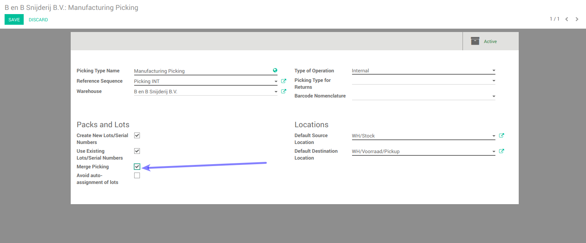

<section class="oe_container oe_dark">
    <div class="oe_row">
        <div class="oe_span12" style="width:90%">
            <h2 class="oe_slogan">Merge Picking</h2>
            <h3 class="oe_slogan">Module allows to create one picking for one product. Moves which are created from reorderig rules and manufecturing orders are assign to one picking as per products</h3>
            <br/>
            <div><b>Note: </b>This module is work only for perticular picking type.</div>
            <div>
                <h3>
                    Configuration
                </h3>
            </div>
            <ul>
                <li style="color:#30054D;font-weight:bold;">check merge picking option in form view of picking operation type. apply this only for picking operation type which is in below image. dont apply it with other picking operation type.</li>
            </ul>
            <br /><br />
            <div>
                <h3>
                    Features
                </h3>
                <ul>
                    <li style="color:#30054D;font-weight:bold;">lots of picking create by running schedular multiple time, which have move lines from MO and reordering rules, client wants to have one picking for one product only. so this module create one picking for one product</li>
                </ul>
            </div>
        </div>
    </div>
</section>
